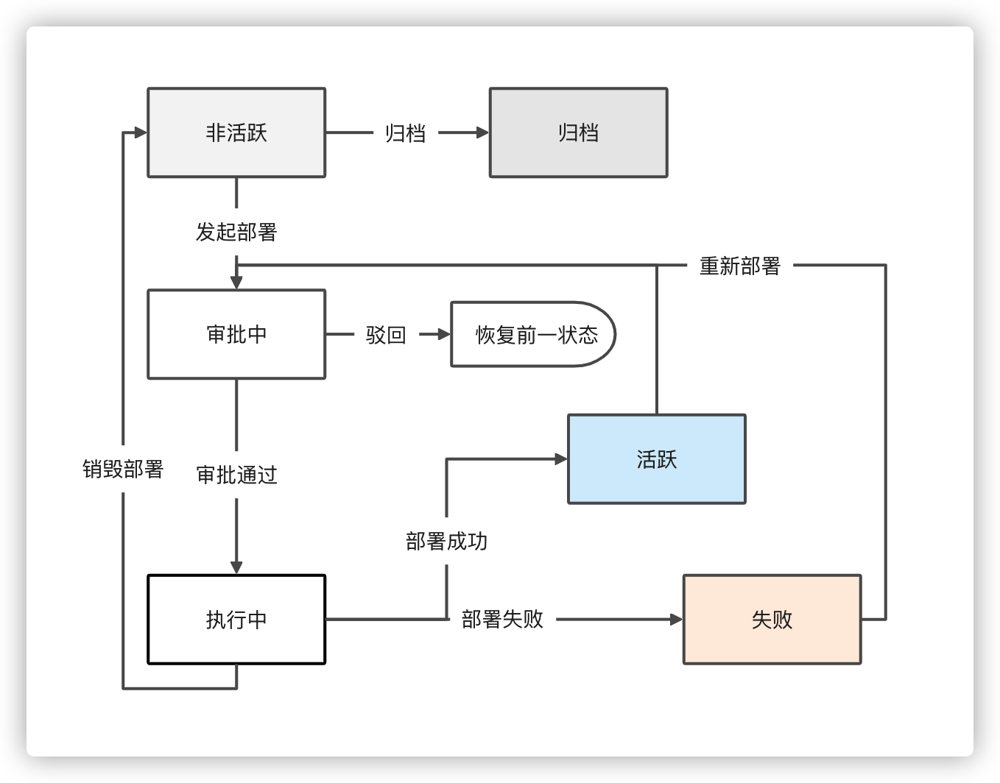

环境管理
什么是环境
环境是由 CloudIaC 管理的部署实例，是CloudIaC管理资源的核心；
用户通过在组织下创建云模板，并运行云模板进行部署来创建新的环境，同时在项目下对环境进行管理；
用户可以创建、重新部署环境，并可对环境下的资源进行销毁；
CloudIaC 通过 Terraform 的状态文件来维护整个环境的状态，用户可以通过修改变量或修改资源描述配置文件来进行重新部署，新的部署会在上一次的状态下进行，通过这种机制，用户可以更加方便的实现对环境资源的扩缩容等操作；同时对于环境下资源的销毁，基于状态也可以快速的实现一键完全的清理。
查看环境详细信息
您可以通过『项目』-『环境』菜单查看您的环境，该页面将列出该项目下所有的环境列表；
对于每个环境，您可以看到它是由哪个云模板创建、创建人、当前状态、环境下创建的资源数量以及剩余的生存时间；
点击环境，展开查看环境详情，在环境详情页面中，您可以执行『重新部署』、『销毁资源』等操作，还可以查看最新部署的日志、Terraform输出、部署中使用的变量以及部署历史记录。
环境状态
环境的状态包括以下几种：
- 活跃：成功部署并启动运行
- 不活跃：资源已销毁
- 执行中：正在部署或者销毁过程中
- 失败：在部署过程中发生错误
- 待审批：operator发起部署作业后等待Manager或Approver审批

环境资源
当您的环境处于活跃状态时，您只需单击环境即可查看其中包含的资源。

存活时间
存活时间是 CloudIaC 从设置完存活时间的时间点到自动销毁环境下资源的时间长度(若是初始创建的环境则会在资源第一次创建成功后开始计算自动销毁时间)；
可以在创建或重新部署环境时设置存活时间，预选值有：不限、12小时、1天、 3天、1周、半个月、1个月和指定时间，选择『指定时间』时可以直接设置一个具体截止时间；
一个不限存活时间的环境将永远不会被自动销毁，通常生产环境等静态环境会设置为不限时间，开发、测试环境则可以根据需要设置合适的存活时间；
创建环境
请参考部署环境
销毁资源
有两种方式对环境下的资源进行销毁；
一种是设置了『存活时间』的环境，在达到时间限制时会自动销毁；
另一种是手动销毁，在『环境详情』页面点击右上角的『销毁资源』来进行销毁操作；
当活跃环境下的资源被销毁成功，环境状态将设置为不活跃，如果销毁资源失败，环境状态将设置为失败。
重新部署环境
对于已经创建出来的环境，您可以重新部署，在环境详情页面，点击右上角的『重新部署』来进行；
如果您的环境当前正在运行部署或销毁任务则无法发起新的部署，您需要等待前一次部署结束才能发起新的任务；
当您重新部署『不活跃』环境时，在部署成功后，环境状态将自动转为『活跃』；
重新部署时，除非手动重新设置存活时间，否则默认使用环境原有的存活时间。
自动重试
在执行环境部署操作时，您可能希望CloudIaC在出现错误时自动重试；
针对每个云模板您可以启用自动重试，并可以配置重试间隔和次数；
CloudIaC 的每一次部署会有多个步骤，重试只会重新执行当前步骤，快成功执行的步骤不会重复执行。
审批流程
对于在环境中执行的每个创建、销毁或重新部署作业， CloudIaC 首先创建一个Terraform Plan，然后会进入『待审批』状态，需要由项目的Manager或Approver角色用户来进行批准才能继续执行部署；
Manager或Approver角色的用户可以在创建环境时选中『自动通过审批』来在后续的部署操作中自动批准而无需等待；
如果用户没有设置自动批准，CloudIaC 将在Terraform plan创建后进入等待，直到Manager或Approver主动批准执行计划。
归档环境
为了帮助用户管理环境，ClouidIaC 可以让用户归档不再使用（不活跃状态）的环境，归档后的环境将不再可用。